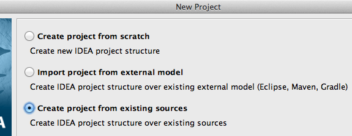
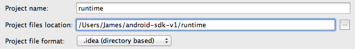
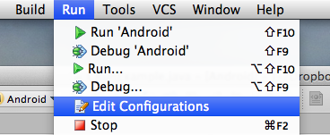
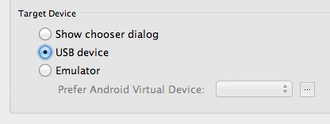
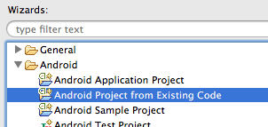
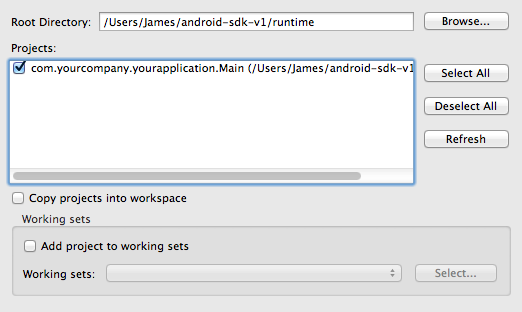

This SDK is for building extensions to target beta 33 and compatible releases of the Android exporter.
Note that this is not a complete guide to the extension development process, but rather instructions for existing extension developers to make use of the Android SDK.
Building the Runtime
2.1. Obtaining the source
2.2. Exporting a CCN
2.3. Building with Ant
2.4. Building with IntelliJ IDEA
2.5. Building with Eclipse
Adding your Extension
3.1. Java or C/C++?
3.2. Adding a new Java extension
3.3. Adding a new C/C++ extension
Graphical Extensions
4.1. In Java
4.2. In C/C++
4.3. With a View
The official Android SDK, with the same API versions necessary for building from MMF2 (if you haven't already configured this, refer to the MMF2 documentation.) The tools and platform-tools directories should be added to your PATH environment variable.
If developing on Windows, the appropriate drivers to use ADB with your device
Either an installation of Apache Ant or a Java IDE of your choice configured for Android development (such as Eclipse, IDEA or NetBeans.) If MMF2 is installed, Apache Ant can be found in the Data/Runtime/Android directory and may be simply added to your PATH.
For C/C++ development, the Android NDK should be installed and added to your PATH. On Windows, you will also find it useful to have a Cygwin installation (although it's no longer necessary for the NDK).
An installation of MMF2 with the Android exporter. This need not be on the same machine as the SDK.
The runtime source is installed with the Android exporter, and can be found in your MMF2 installation as Data/Runtime/Android/RuntimeAndroid.zip. This should be extracted to the runtime/ directory of the SDK.
The runtime requires an application.ccn in the res/raw directory to function. MMF2 with the Android exporter has a hidden feature to export just the CCN and sounds for an application, without building an APK.
To use this, go to build an Android application as normal, but before selecting Save (in the res/raw directory of the SDK), hold down the shift key. Continue to hold shift until the export is complete.
If you prefer to work without an IDE, the runtime should compile out of the box with Apache Ant. Simply navigating to the runtime/ directory and running ant debug should be enough to produce an APK in runtime/bin/.
The APK can be (re)installed on a device with adb. For example:
adb install -r ./bin/RuntimeAndroid-debug.apk
Note that you should already have IDEA configured for Android development before attempting to work with the MMF SDK. For more information, see the idea-android documentation.
Select File > New Project and choose to create a project from existing sources:

When prompted, choose the runtime directory from this SDK package:

Then follow the wizard to create a project (you shouldn't have to change any of the defaults). The runtime is now ready to work with like any other Android project in IDEA.
If you find that the application will only run on the emulator, it may be necessary to change the run configuration. To do this, select Edit Configurations from the Run menu:
 Edit Configurations" title="" />
and change the target device as desired:

Note that you should already have Eclipse configured for Android development before attempting to work with the MMF SDK. For more information, see Installing ADT.
Select File > New > Project and choose the Android Project from Existing Code wizard:

When prompted for the root directory, choose the runtime directory from this SDK package:

The runtime is now ready to work with like any other Android project in Eclipse.
The MMF runtime for Android is a hybrid runtime, in which some of the code is written in Java and some (such as collision masks and the GL renderer) in C/C++. Extensions may be written in either language.
Generally speaking, if your extension will do any of the following:
You should be writing it in Java. However, if the above limitations do not apply and your extension will:
Then the C/C++ SDK may be more appropriate. It's also worth considering which languages your extension has already been ported to; if your extension works with the Java runtime, it will probably already be compatible with Android.
The steps for this are nearly identical to the Java and Flash runtimes:
Create a new class under Extensions. If your extension is called Example.mfx, the class would be called CRunExample. It may help to make a copy of an existing extension as a starting point (I usually use CRunGet).
Edit the CExtLoad class under Extensions, adding your extension to the list before // ENDCUT. For example:
if (name.compareToIgnoreCase ("Example") == 0) { object = new CRunExample (); }
Inside the native directory, copy CRunTemplate and rename it to the name of your extension. If your extension is called Example.mfx, the new directory would be called CRunExample.
Open the Android.mk file in your new directory, and update LOCAL_MODULE to the correct name
From a terminal, run ndk-build in the directory. This should produce a set of shared objects (one for each architecture) in the libs directory, which should be copied to runtime/assets/mmf/.
In the tools/ directory, a script called install-native is provided to automate the process of building native extensions and copying over the shared objects. (On Windows, you should run it under Cygwin bash.)
Like the iOS runtime, the Android runtime is hardware accelerated using OpenGL ES 2.0. Extensions should only ever draw to the screen in displayRunObject.
The renderer class used by most of the runtime is available in GLRenderer.inst, providing high-level methods for drawing images and primitives to the screen. In most cases, this is recommended over using OpenGL directly.
If direct access to the OpenGL APIs is required, extensions are permitted to import android.opengl.GLES20 and use the GLES20.* methods as they desire, providing they are only called from within displayRunObject. Note that this might break if future versions of the runtime don't use ES 2.0 in all cases (while the high-level renderer obviously will not).
The high-level renderer is not available in C/C++, so the only option is to use the ES 2.0 methods directly. OpenGL is usually more convenient to work with from C than Java, but the issue of possible breakage with future runtime versions still applies.
The native extension template links with libGLESv2 by default.
If your extension is going to host a View (as, for example, the Button object does):
CRunViewExtension instead of CRunExtensioncreateRunObject, create your View and pass it to setViewsetViewX, setViewY or setViewPositionsetViewWidth, setViewHeight or setViewSizeThe runtime will then ensure that your view is correctly displayed. View extensions cannot be written in C/C++.
MMF2 searches for Android extensions in the Data/Runtime/Android directory, as ZIP archives to merge with the runtime source before building.
To distribute your extension, you should create a ZIP with the same structure as the runtime/ directory from the SDK. For example, Data/Runtime/Android/Get.zip contains just one correctly nested file:
./src/Extensions/CRunGet.java
And Data/Runtime/Android/AESFusion.zip (a C extension) contains the shared objects for three different architectures:
./assets/mmf/armeabi/CRunAESFusion.so
./assets/mmf/armeabi-v7a/CRunAESFusion.so
./assets/mmf/x86/CRunAESFusion.so
An extension package may contain anything, including additional resources (such as images, sounds or shaders) for the res/ directory.